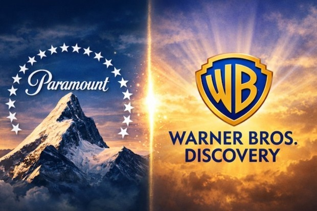
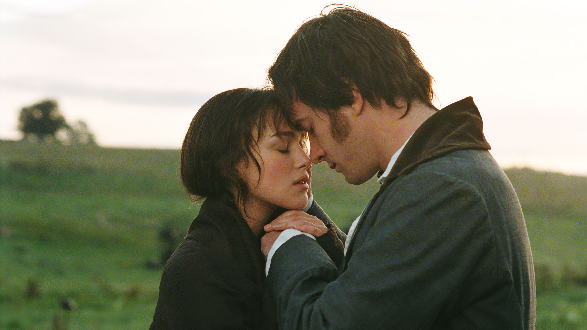

Análisis Nota
Resident Evil, ¿se terminó la maldición de las películas de videojuegos?
Tras el estreno del film más reciente de Zach Cregger, las comparaciones con otras largometrajes basadas en clásicos del gaming, no se hicieron esperar.
Cine desde todos sus ángulosPeriodismo · Cultura · Industria
En portada
Selección de la redacción
Análisis Nota
Tras el estreno del film más reciente de Zach Cregger, las comparaciones con otras largometrajes basadas en clásicos del gaming, no se hicieron esperar.
Tras muchos idas y vueltas, disputas con fiscales generales y otros gigantes como Netllix en el medio, Paramount logró sentar las bases para cumplir con su cometido de una vez por todas.
La plataforma de streaming ha presentado el tráiler oficial de “Las nuevas desventuras de Cliff Booth”, la continuación derivada de “Érase una vez en…Hollywood”.
La adaptación de Joe Wright llegó a los cines en 2005 y convirtió la novela de Jane Austen en un clásico del cine romántico.

Tras muchos idas y vueltas, disputas con fiscales generales y otros gigantes como Netllix en el medio, Paramount logró sentar las bases para cumplir con su cometido de una vez por todas.

Estrenos Nota
La plataforma de streaming ha presentado el tráiler oficial de “Las nuevas desventuras de Cliff Booth”, la continuación derivada de “Érase una vez en…Hollywood”.

Efemérides Nota
La adaptación de Joe Wright llegó a los cines en 2005 y convirtió la novela de Jane Austen en un clásico del cine romántico.